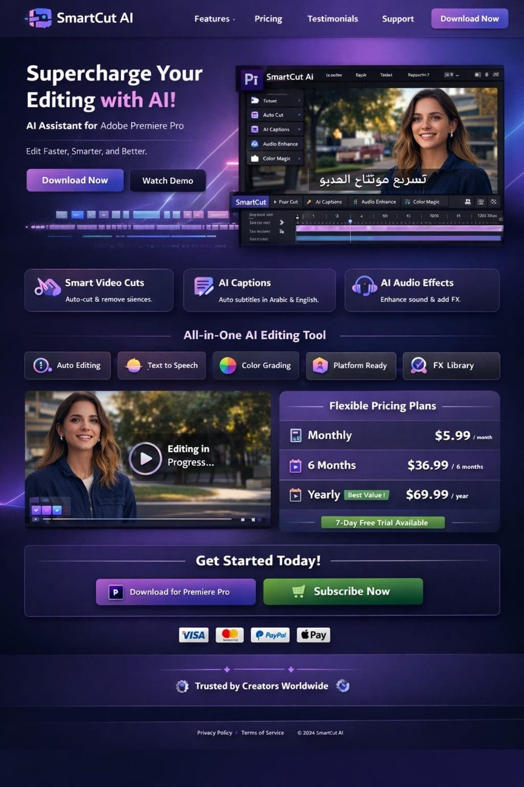

بلوقن ذكاء اصطناعي للمونتاج داخل Adobe Premiere Pro
مونتاج أسرع، قرارات أذكى، وفيديو جاهز للنشر من نفس التايم لاين.
SmartCut AI يختصر ساعات من القص والضبط اليدوي إلى خطوات ذكية: يحذف الصمت، يختار أفضل اللقطات، يولد Captions عربي/إنجليزي، يحسن الصوت، ويجهز نسخ المنصات تلقائيًا.
- تقطيع ذكي يزيل الصمت والتكرار ويحتفظ بالمقاطع القوية.
- مساعد ذكي تنفذ له أوامر مباشرة مثل: "رتب اللقطات وأضف انتقالات".
- تعلم تدريجي لأسلوبك في المونتاج واقتراحات أقرب لطريقتك مع الوقت.
SmartCut AI Workspace
Auto Cut
AI Captions
Audio Fix
Color Match

اقتراح أفضل اللقطات
جاهز لـ Reels / Shorts / TikTok
AI Assistant
نفّذ أوامرك داخل المشروع
احذف الصمت ورتب أفضل اللقطات
Platform Ready
9:16 Shorts
16:9 YouTube
1:1 Ads
Interactive Demo
نسخة عملية تفاعلية تجسد الميزات بدل مجرد عرضها
هذه اللوحة تعمل داخل المتصفح كنموذج احترافي: ارفع فيديوك أو استخدم المشروع التجريبي، ثم جرّب القص الذكي، الترجمة، أوامر المساعد، البحث بالكلمات، حفظ الأسلوب، وتصدير تقرير المشروع.
Smart Cut
تقطيع ذكي واختيار أفضل اللقطات
سيقوم SmartCut AI بإزالة المقاطع الأضعف أو المقاطع التي تحتوي على صمت أعلى.
Captions
توليد ترجمة عربية/إنجليزية بستايلات جاهزة
Look & Sound
ألوان وصوت وإعداد منصة بنقرة واحدة
Assistant
مساعد ذكي يقرأ طلبك وينفذ الخطوات المناسبة
Search
ابحث داخل الفيديو بالكلمات المنطوقة
Style Learning
يتعلم أسلوبك في الاستخدام ويحفظ تفضيلاتك محليًا
Core Features
كل ما تحتاجه للمونتاج السريع في بلوقن واحد
التجربة هنا ليست مجرد قائمة أدوات، بل سير عمل متكامل يبدأ من تنظيف المادة الخام وينتهي بفيديو جاهز للنشر.
تقطيع الفيديو الذكي
يحذف الصمت، يقلل التكرار، ويحدد المقاطع الأكثر جذبًا للمشاهد.
Captions تلقائية
كتابة ترجمة عربية وإنجليزية مع قوالب جاهزة تناسب المقاطع القصيرة واليوتيوب.
تحسين الصوت
تنقية الضوضاء، رفع الوضوح، واقتراح مؤثرات صوتية مناسبة للمشهد.
اقتراح مونتاج جاهز
انتقالات مرتبة، ترتيب تلقائي للمشاهد، وإيقاع تحرير متوازن حسب نوع المحتوى.
تصحيح ألوان ذكي
مطابقة لونية تلقائية للفلوغ، البودكاست، الريلز، والمحتوى التجاري.
تجهيز للمنصات
إعدادات جاهزة لـ TikTok وYouTube وInstagram بدون تضييع وقت في المقاسات.
بحث داخل الفيديو
ابحث بالكلمات المنطوقة للوصول السريع للمشهد المطلوب داخل التايم لاين.
مكتبة FX جاهزة
مؤثرات وانتقالات وقوالب افتتاحيات تساعدك تبدأ بسرعة وبجودة متناسقة.
Workflow
من المادة الخام إلى فيديو جاهز خلال دقائق
صممنا تجربة البلوقن لتكون واضحة حتى للمبتدئ، لكنها قوية بما يكفي للمحترف الذي يريد اختصار وقت التنفيذ.
استورد المشروع
ارفع اللقطات أو افتح مشروعك الحالي ودع SmartCut AI يحلل المشاهد والصوت.
اختر النمط أو اكتب طلبك
استخدم أوامر مثل: "جهز نسخة Shorts" أو "أضف Captions وستايل سريع".
راجع وصدّر
البلوقن يقترح القصات، الصوت، الألوان، والتصدير المناسب لكل منصة.
SmartCut AI Command Bar
$
أنشئ نسخة يوتيوب كاملة مع Captions وتصحيح ألوان سينمائي
Why It Wins
بدل ما تضيع الوقت بين أدوات متفرقة، كل شيء يصير من لوحة واحدة.
الواجهة تجمع بين القص الذكي، الكتابة التلقائية، تحسين الصوت، البحث داخل الفيديو، والتصدير حسب المنصة داخل نفس التجربة.
مخصص للمحتوى القصير والطويل
Shorts, Reels, Vlogs, Tutorials
سواء كان الفيديو سريعًا أو حلقة كاملة، SmartCut AI يضبط الإيقاع حسب النوع.
قابل للتوسع
ابدأ بسيطًا ثم فعّل الميزات المتقدمة
المبتدئ يحصل على نتائج جاهزة، والمحترف يحتفظ بتحكم كامل قبل التصدير النهائي.
Pricing
أسعار واضحة بعد خصم الإطلاق 10%
الخصم مطبق على الباقات الثلاث مع إبراز التوفير الحقيقي في كل خيار.
شهري
مرونة كاملة
$5.39
/ شهر
$5.99 قبل الخصم
- الوصول لكل الأدوات الأساسية
- Captions عربي/إنجليزي
- تحسين صوت وتصدير للمنصات
وفرت $0.60
6 شهور
الأكثر توازنًا
$33.29
/ 6 شهور
$36.99 قبل الخصم
- أفضل قيمة لمن ينشر باستمرار
- دعم التخصيص والتعلم من أسلوبك
- مكتبة FX وقوالب جاهزة
وفرت $3.70
سنوي
أفضل توفير
$62.99
/ سنة
$69.99 قبل الخصم
- للفرق وصناع المحتوى المستمرين
- استخدام طويل المدى بأقل تكلفة شهرية
- أولوية في التحديثات والميزات الجديدة
وفرت $7.00
FAQ
أسئلة سريعة قبل الإطلاق
هل البلوقن مناسب للمبتدئين؟
نعم، لأنه يعتمد على أوامر جاهزة واقتراحات تلقائية داخل Premiere Pro.
هل يدعم العربية؟
يدعم Captions بالعربي والإنجليزي مع واجهة تسويقية تبرز هذا العنصر بوضوح.
ما الذي يميزه عن الأدوات المنفصلة؟
يجمع القص، البحث، الصوت، الترجمة، الألوان، والتصدير في تجربة واحدة متصلة.
Launch CTA
جهّز صفحة المنتج، وابدأ عرض SmartCut AI بطريقة تليق بالفكرة.
التصميم الحالي يعطيك أساسًا بصريًا وتسويقيًا واضحًا يمكن تطويره لاحقًا إلى صفحة بيع كاملة أو Demo تفاعلي.